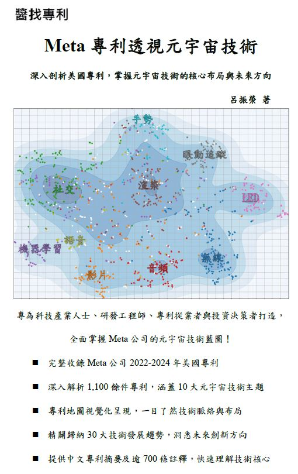

我的電子書作品：《Meta專利透視元宇宙技術》
本書由我 （呂振榮） 親自撰寫，並全面揭示Meta（前身為Facebook）在元宇宙領域的最新專利技術布局。本書透過對2022至2024年間超過1,100件美國專利的詳細分析，探討Meta在元宇宙關鍵技術領域的創新趨勢與未來發展。
本書特色：
- 完整收錄Meta公司2022年至2024年的美國專利，掌握最新技術布局。
- 深入解析超過1,100件專利，精準對焦元宇宙關鍵技術。
- 專利地圖視覺化，快速理解技術結構與演進脈絡。
- 歸納30大技術趨勢，洞察未來創新與市場動向。
- 提供中文專利摘要與700+條註解，協助迅速掌握技術精髓。
無論您是科技產業專業人士、研發工程師、專利分析師，還是投資決策者，這本書都將是您探索元宇宙技術版圖、掌握未來創新脈絡的重要資源。
著作權聲明：
本書封面使用的「醬找專利」商標是我親自經營的品牌，與本書的內容與精神高度契合。
目前此書已經在 Google Play Books 上架，並由我本人親自上傳。所有著作權均歸我所有，未經許可不得轉載、改編或擅自散播。
© 2025 呂振榮｜本書著作權所有